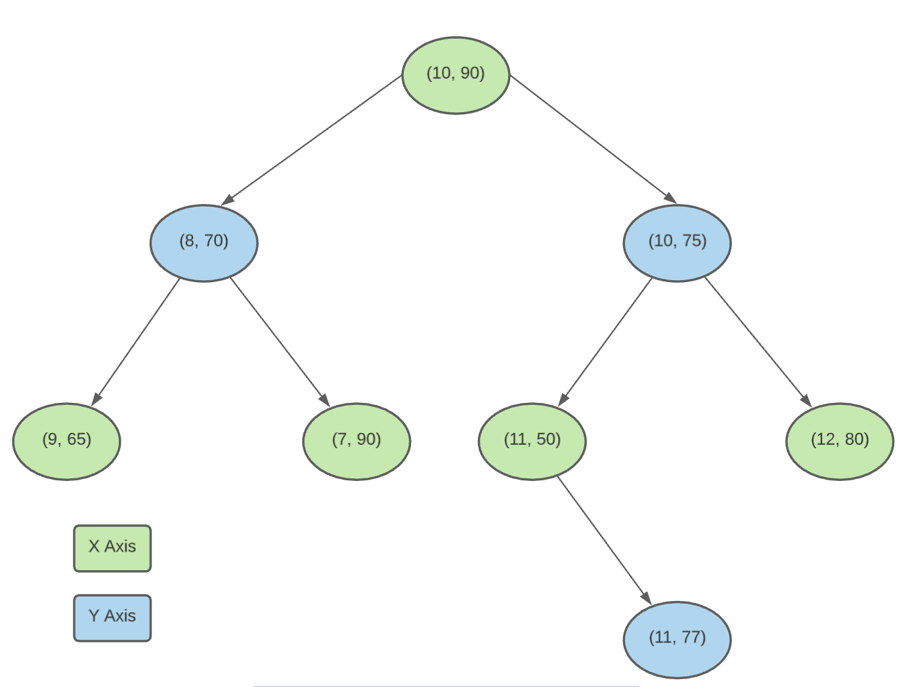
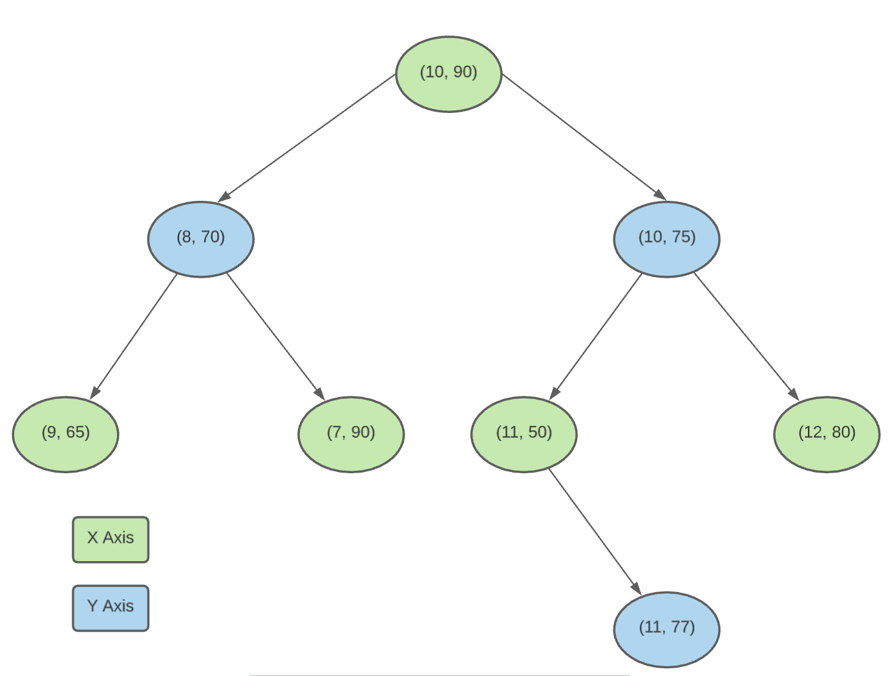

BKD Trees
BKD stands for Binary K-Dimensional(K-D) trees. It draws few characteristics from Binary Search Tree(BST), K-Dimensional Tree and also B+ trees.
Below are the overview of characteristics drawn from these data structurues:
K-D Tree
- supports multi-dimension like K-D trees
- BKD tree is a collection of multiiple KD trees as children
Binary Search Tree
- Each node can have maximum 2 childs
- It's a balanced tree with height difference between left and subtree at any node is not greater than 1.
- like BST leverages the capability of divide and search the space by 2 at each node for traversal.
- All the above properties are inhereted by K-D trees. BKD inherets it from K-D trees
B+ Tree
- stores the actual data at leaf node
- Internal nodes are just used to reach appropriate blocks
K-D Tree
BKD tree is extension of K-D tree so let us begin with understanding K-D tree. K-D tree or K-Dimensional trees are capable of handling multiple dimensions where as binary is capable of handling only one dimension. Common example for multiple dimension is 'co-ordinates' which stores latitude and longitude.
K-D trees are simillar to BST but they are capable of handling multiple dimension. So during search, each traversal is able to divide a particular dimension into 2 and search like BST.
 Above figure, is representation of a 2D structure. 'A' was identified by splitting the X axis into 2 and E & F were identified by splitting 'A' further.
Let us start with understanding 2D tree for simplicity. Below is the example of a 2D(x and y) KD tree.

Above figure, is representation of a 2D structure. 'A' was identified by splitting the X axis into 2 and E & F were identified by splitting 'A' further.
Let us start with understanding 2D tree for simplicity. Below is the example of a 2D(x and y) KD tree.

Each level in the above tree deals with one dimension.
Level 0 deals with dimension 1(x Axis)
Level 1 deals with dimension 2(Y Axis)
Level 2 deals with dimension 1(X Axis) and so on in round robin
Node addition to the tree happens as follows:
-
(10,90) goes into root as tree is empty
-
(8,70) addition: goes into left node of root as 8 < 10
-
(9,65) addition: 9 < 10 so goes to left of root and 65 < 70 so it goes to left of (8,70)
-
(7,90) additoin: 7 < 10 so goest to left of root and 90 > 70 so it goes to right of (8,70)
-
(10,75) addition: 10 == 10 so goes to the right of the root
- (11,50) addition: 11 > 10 so goes to right the root and 50 < 75 so it goes to left of (10,73)
- (12,80) addition: 12 > 10 and 80 > 75 so it goes to right of (10,73)
- (11,77) addition: 11 > 10, 74 < 75 and 707 > 50 so it goes to right of (11,50)
Below is mapping between node level and dimension it will be dealing with for different KD trees.
| 2 Dimensional BKD Tree |
| Level | Dimension |
| 0(Root) | 1 |
| 1 |
2 |
| 2 |
1 |
| 3 |
2 |
| 4 |
1 |
| ... |
|
| ... |
|
| 3 Dimensional BKD Tree |
| Level | Dimension |
| 0(Root) |
1 |
| 1 |
2 |
| 2 |
3 |
| 3 |
1 |
| 4 |
2 |
| ... |
|
| ... |
|
| 4 Dimensional BKD Tree |
| Level | Dimension |
| 0(Root) |
1 |
| 1 |
2 |
| 2 |
3 |
| 3 |
4 |
| 4 |
1 |
| ... |
|
| ... |
|
Dimension to be dealt at Level X = Level % N
Level - is X level of the Tree
N - Number of dimensions
Disadvantages of K-D Tree
- Complex to balance the tree
- As each node can store its data, there is no constraints on how a large amounts of data can be stored. Which causes memory in-efficiency.
BKD Tree
BKD tree tries to solve both the space and time in-efficiency of KD tree. BKD tree is made up of multiple K-D trees but the data is stored only in leaf nodes like B+ tree. So this reduces frequent balancing and improves the memory utilization as the data will be stored in a continous block, so it will easy to cache.
Below is the pictorial representation of BKD tree:

Internal nodes are used to store pointers to reach appropriate blocks and they must follow a complete binary tree. Nodes doesnt have to store the pointers also as left child will be always 2i and right child will be 2i+1 for a node at position i. As nodes will not contain value, it will be easy to store in cache and also as most of the elements will be stored only in leaf node, tree height will be always minimal.